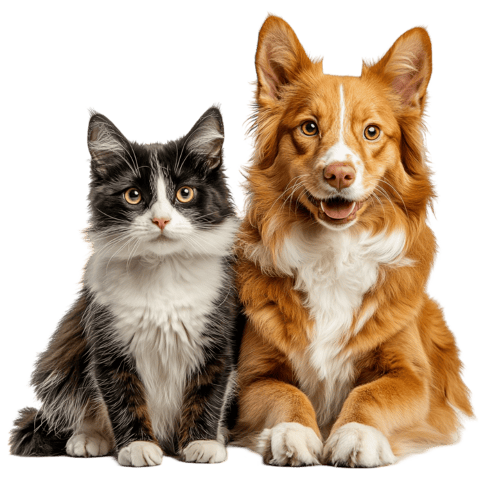

Adoção responsável
Incentivamos a adoção consciente e o compromisso com o bem-estar dos animais.
AMOR, CUIDADO E NOVAS CHANCES
Um lar cheio de amor pode transformar a vida de um animal. Encontre seu novo melhor amigo e faça parte dessa história.
Encontrar meu amigo

SOBRE A ONG
O Patinhas do Bem é uma iniciativa fictícia que promove a adoção responsável, o cuidado e a conscientização sobre a proteção animal. Acreditamos que cada pequeno gesto pode mudar uma vida.
ADOTE UM AMIGO
Eles estão esperando uma família para compartilhar carinho, brincadeiras e muitos momentos felizes.
FAÇA A DIFERENÇA
Você pode contribuir com doações, participar de campanhas ou compartilhar informações sobre adoção responsável.
Incentivamos a adoção consciente e o compromisso com o bem-estar dos animais.
Arrecadação de ração, mantas e itens essenciai para o cuidado animal.
Pessoas que dedicam seu tempo e suas habilidades ajudam a transformar histórias.
VEM COM A GENTE
Cadastre-se e descubra como participar das nossas ações.